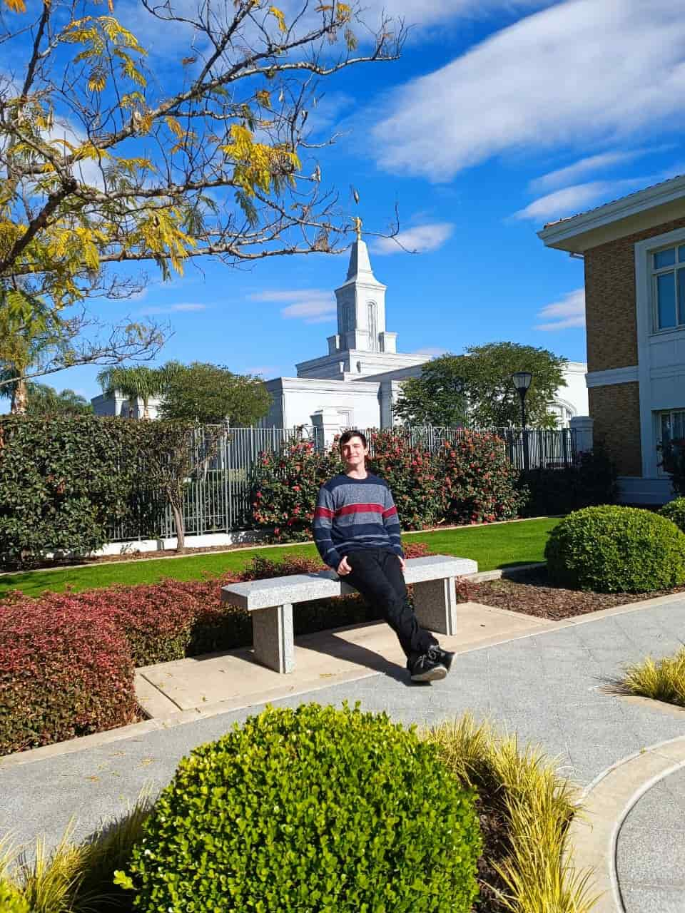

Benjamin Heredia | WDD 130

Hello! My name is Benjamin Heredia and I'm from Argentina. I'm excited to have this great opportunity to improve my skills in both programming and web development!

Hello! My name is Benjamin Heredia and I'm from Argentina. I'm excited to have this great opportunity to improve my skills in both programming and web development!